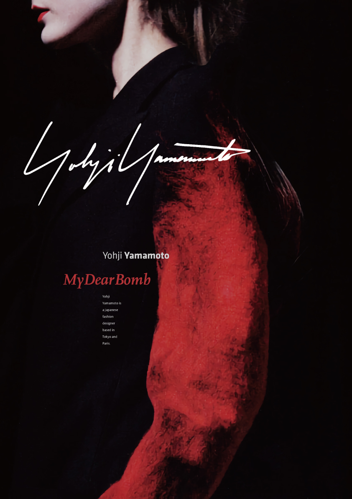

ART POSTER SERIES 1 - Yohji Yamamoto, My Dear Bomb
패션 브랜드의 아이덴티티와 시각적 요소를 서칭한 후, 시각적으로 재해석한 아트 포스터 개인 작업입니다.
시각적인 후킹을 우선순위로 브랜드의 이미지, 로고, 다양한 폰트를 사용해 한장의 이미지들로 제작했습니다.
작업물들은 콘텐츠와 오프라인 환경을 고려해 제작되었습니다.
시각적인 후킹을 우선순위로 브랜드의 이미지, 로고, 다양한 폰트를 사용해 한장의 이미지들로 제작했습니다.
작업물들은 콘텐츠와 오프라인 환경을 고려해 제작되었습니다.
Project Overview
일본의 디자이너 요지 야마모토는 일본의 1세대 디자이너입니다.
블랙을 메인으로 사용하기에 루즈하면서도 풍성한 실루엣에서 그의 감각적인 디자인을 보여주는 것이 특징입니다.
아방가르드한 그의 디자인들이 드러나면서도 블랙과의 대비가 강한 레드를 포인트로 사용한 이미지를 메인으로 사용했습니다.
블랙을 메인으로 사용하기에 루즈하면서도 풍성한 실루엣에서 그의 감각적인 디자인을 보여주는 것이 특징입니다.
아방가르드한 그의 디자인들이 드러나면서도 블랙과의 대비가 강한 레드를 포인트로 사용한 이미지를 메인으로 사용했습니다.


Personal work
02.2020 - 08.2020
Tool : Photoshop, Illustrator, Lightroom
02.2020 - 08.2020
Tool : Photoshop, Illustrator, Lightroom
← back previous page